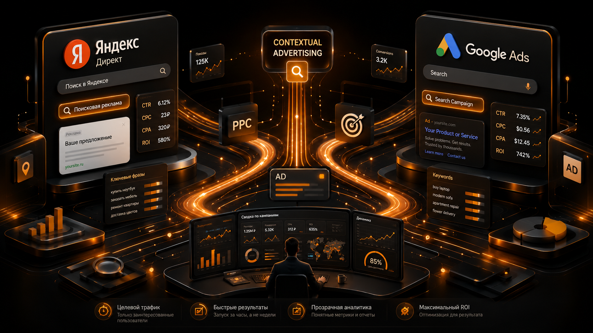

Контекстная
реклама
Яндекс Директ и Google Ads: услуги, e-commerce, сервисные и международные проекты. Нажмите на карточку, чтобы узнать подробнее.

Каким бизнесам подходит контекстная реклама?
Контекстная реклама лучше всего подходит бизнесам, где уже есть прямой горячий спрос: люди ищут услугу, товар или решение проблемы в поиске и готовы перейти на сайт.
- Подходит для ниш с понятным поисковым спросом и сформированной потребностью.
- Хорошо работает, когда воронка обязательно ведёт через сайт, квиз или посадочную страницу.
- Помогает возвращать тёплую аудиторию через ретаргетинг и сети.
- Особенно полезна, когда важно быстро получать заявки от людей, которые уже ищут продукт.
Юридические услуги по банкротству физлиц
Яндекс Директ для юридических услуг в Москве и области. Первый месяц работы дал заявки по понятной экономике для дорогой услуги.
Центр альтернативной тибетской медицины
Google Ads для центра альтернативной тибетской медицины в Казахстане. За 2 месяца собирались формы и звонки как разные типы конверсий.
Производство ювелирных украшений в Москве
Яндекс Директ на сайт для двух направлений: лидогенерация на индивидуальное производство украшений и e-commerce для готовой продукции и драгоценных камней.
Сервис по подбору психологов
Запуск с нуля в регионах РФ: за 3 месяца собрали лиды, сделали 2 лендинга и подняли конверсию сайта с 9% до 17%.
Турагентство Coral Travel
Яндекс Директ на сайт для туристических услуг и срочных виз. Кампании работают на лидогенерацию и заявки по сезонному спросу.
Интернет-магазин слуховых аппаратов Carelux
Контекстная реклама интернет-магазина слуховых аппаратов и батареек. Критична точная семантика под разные товарные группы.
Деревянные беседки на заказ в Беларуси
Яндекс Директ на сайт для производства деревянных беседок на заказ. Поисковая реклама работает с горячим спросом на изготовление и покупку.
Аренда VPS и физических серверов
Яндекс Директ на сайт для аренды VPS и выделенных серверов в Москве в дата-центре 3R3. Цель — лидогенерация и отправка заявки.
Производство электроники и монтаж печатных плат
B2B-направление в Яндекс Директ. Основной фокус — поисковая реклама и лидогенерация на сайте для заявок на производство и монтаж плат.
Премиальная уходовая косметика
Яндекс Директ для премиальной уходовой косметики. Кампании ведут трафик на сайт и работают с e-commerce спросом.